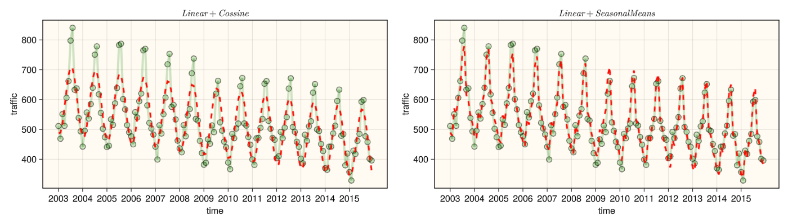
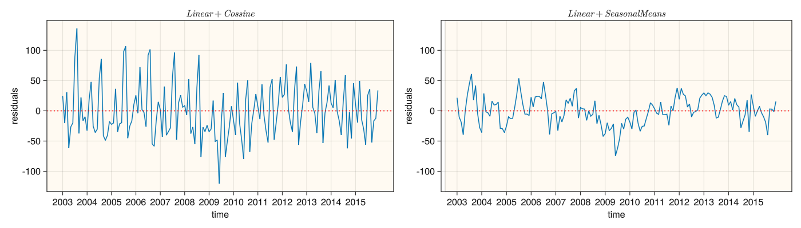

Code
include("utils.jl")
using RCall
using GLMakie,DataFrames,Pipe,PrettyTables,DataFramesMeta,FreqTables
using StatsBase,TableTransforms
using GLM,AnovaGLM,HypothesisTests
res=(600,300)(600, 300)math4mads
September 7, 2023
PeaceBridge2012 seasonal time series
PeaceBridge2003 记录了PeaceBridge 大桥的长期的通行车辆记录
┌───────┬───────┬─────────┬───────┐
│ Year │ Month │ Traffic │ t │
│ Int32 │ Int32 │ Float64 │ Int32 │
├───────┼───────┼─────────┼───────┤
│ 2003 │ 1 │ 511.4 │ 1 │
│ 2003 │ 2 │ 468.7 │ 2 │
│ 2003 │ 3 │ 551.4 │ 3 │
└───────┴───────┴─────────┴───────┘Figure 1 : PeaceBridge2003 series plot
2-element Vector{StatsModels.TableRegressionModel{LinearModel{GLM.LmResp{Vector{Float64}}, GLM.DensePredChol{Float64, LinearAlgebra.CholeskyPivoted{Float64, Matrix{Float64}, Vector{Int64}}}}, Matrix{Float64}}}:
StatsModels.TableRegressionModel{LinearModel{GLM.LmResp{Vector{Float64}}, GLM.DensePredChol{Float64, LinearAlgebra.CholeskyPivoted{Float64, Matrix{Float64}, Vector{Int64}}}}, Matrix{Float64}}
Traffic ~ 1 + t + :(cost(t)) + :(sint(t))
Coefficients:
────────────────────────────────────────────────────────────────────────────
Coef. Std. Error t Pr(>|t|) Lower 95% Upper 95%
────────────────────────────────────────────────────────────────────────────
(Intercept) 601.503 7.25186 82.94 <1e-99 587.176 615.831
t -0.980999 0.080168 -12.24 <1e-23 -1.13939 -0.822612
cost(t) -86.3254 5.09676 -16.94 <1e-36 -96.395 -76.2558
sint(t) -77.77 5.1049 -15.23 <1e-31 -87.8557 -67.6843
────────────────────────────────────────────────────────────────────────────
StatsModels.TableRegressionModel{LinearModel{GLM.LmResp{Vector{Float64}}, GLM.DensePredChol{Float64, LinearAlgebra.CholeskyPivoted{Float64, Matrix{Float64}, Vector{Int64}}}}, Matrix{Float64}}
Traffic ~ 1 + t + Month
Coefficients:
────────────────────────────────────────────────────────────────────────────
Coef. Std. Error t Pr(>|t|) Lower 95% Upper 95%
────────────────────────────────────────────────────────────────────────────
(Intercept) 490.857 7.27524 67.47 <1e-99 476.476 505.238
t -0.978972 0.042343 -23.12 <1e-49 -1.06267 -0.895273
Month: 2 -10.1672 9.31403 -1.09 0.2768 -28.5781 8.24378
Month: 3 82.1964 9.31431 8.82 <1e-14 63.7849 100.608
Month: 4 64.4831 9.3148 6.92 <1e-09 46.0706 82.8956
Month: 5 119.608 9.31547 12.84 <1e-24 101.194 138.022
Month: 6 150.703 9.31633 16.18 <1e-33 132.287 169.118
Month: 7 268.635 9.31739 28.83 <1e-60 250.218 287.053
Month: 8 296.714 9.31864 31.84 <1e-66 278.294 315.134
Month: 9 133.001 9.32009 14.27 <1e-28 114.578 151.424
Month: 10 115.057 9.32172 12.34 <1e-23 96.6307 133.483
Month: 11 63.382 9.32355 6.80 <1e-09 44.9522 81.8118
Month: 12 42.2302 9.32557 4.53 <1e-04 23.7965 60.664
──────────────────────────────────────────────────────────────────────────── yhat1=predict(mds[1],select(data,:t))
yhat2=predict(mds[2],select(data,[:Month,:t]))
function plot_two_reg()
yr=unique(data[:,:Year]).|>Symbol.|>String
tr=Vector(1:12:length(data[:,:t]))
fig=Figure(resolution=(1400,400))
ax1=Axis(fig[1,1];xlabel="time",ylabel="traffic",title=L"Linear+Cossine")
ax2=Axis(fig[1,2];xlabel="time",ylabel="traffic",title=L"Linear+Seasonal Means")
ax1.xticks=(tr,yr)
ax2.xticks=(tr,yr)
Box(fig[1,1];color = (:orange,0.05),strokewidth=0.5)
Box(fig[1,2];color = (:orange,0.05),strokewidth=0.5)
scatterlines!(ax1,data[:,:t],data[:,:Traffic];marker_style...,linewidth=4)
scatterlines!(ax2,data[:,:t],data[:,:Traffic];marker_style...,linewidth=4)
lines!(ax1,data[:,:t],yhat1;color=:red,linestyle=:dash,linewidth=3)
lines!(ax2,data[:,:t],yhat2;color=:red,linestyle=:dash,linewidth=3)
fig
end
plot_two_reg()
"linear-cosine residuals"
lc_resid=residuals(mds[1])
"lienar-seasonalmeans residuals"
ls_resid=residuals(mds[2])
function plot_pair_resid()
yr=unique(data[:,:Year]).|>Symbol.|>String
tr=Vector(1:12:length(data[:,:t]))
fig=Figure(resolution=(1400,400))
Box(fig[1,1];color = (:orange,0.05),strokewidth=0.2)
Box(fig[1,2];color = (:orange,0.05),strokewidth=0.2)
ax1=Axis(fig[1,1];xlabel="time",ylabel="residuals",title=L"Linear+Cossine")
ax2=Axis(fig[1,2];xlabel="time",ylabel="residuals",title=L"Linear+Seasonal Means")
ax1.xticks=(tr,yr)
ax2.xticks=(tr,yr)
linkyaxes!(ax1, ax2)
lines!(ax1,ts,lc_resid)
lines!(ax2,ts,ls_resid)
hlines!(ax1,[0],linestyle=:dot, linewidth=2,color=(:red, 0.8))
hlines!(ax2,[0],linestyle=:dot, linewidth=2,color=(:red, 0.8))
fig
end
plot_pair_resid()
function report_r2_se()
yhat1=predict(mds[1],select(data,:t))
yhat2=predict(mds[2],select(data,[:Month,:t]))
se1=rmsd(data[:,:Traffic],Float64.(yhat1))
se2=rmsd(data[:,:Traffic],Float64.(yhat2))
r21=r2(mds[1])
r22=r2(mds[2])
c1=["Linear Model","Linear+Season Means"]
c2=[r21,r22].|>(d->round(d,digits=2)).|>d->"$(100*d)%"
c3=[se1,se2]
report_table=DataFrame(Model=c1,R²=c2,SE=c3)
end
report_r2_se()| Row | Model | R² | SE |
|---|---|---|---|
| String | String | Float64 | |
| 1 | Linear Model | 81.0% | 44.427 |
| 2 | Linear+Season Means | 95.0% | 22.735 |
\(lag\)是时滞, \(acf\)是自相关系数
通过使用不同的基函数对时间序列进行分解表示, 在PeaceBridge 2012 和PeaceBridge2003数据集上都获得了很好的拟合效果, 这提示我们是否 还能够使用更过类型的基函数来拟合复杂时间序列?